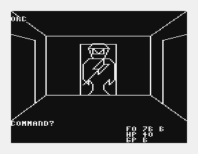

"Akalabeth: World of Doom" Richard Garriot (1979)

| This is a role-playing video game released in 1979 by Richard Garriott. It is generally recognized as one of the earliest known examples of a role-playing video game. |
| AKALABET.CAS |
Instructions:
|
© 2019 Dr. James B. Gerrie and Charles Gerrie
Dr. James Gerrie's Faculty Page